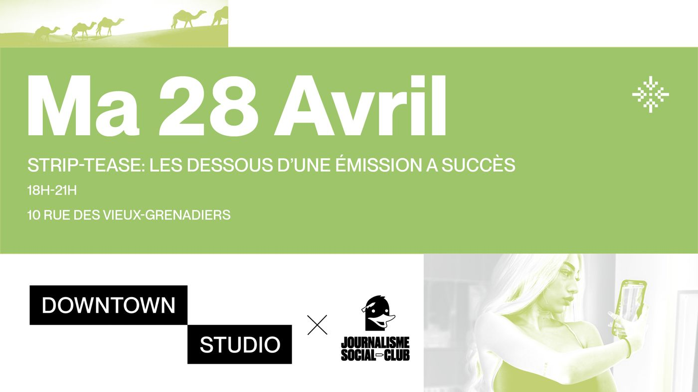

Deux réalisatrices du film Strip-Tease intégral parlent de leur méthode et de leur éthique. Comment trouve-t-on ses personnages, quelle part de script et d'improvisation, et jusqu'où aller sans tomber dans le voyeurisme ?
Avec
- Clémentine Bisiaux, journaliste et réalisatrice
- Régine Dubois, animatrice radio et réalisatrice